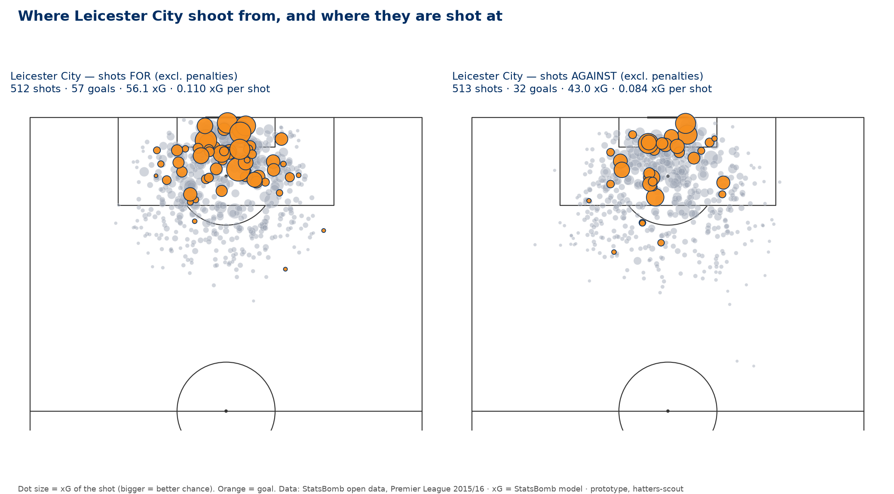

Figures run to 14 November, but Luton Town's last game in them is the 1–1 draw at Huddersfield Town on 3 November. Their home game with Cambridge United, listed for 14 November, is not in the results file, and no report has confirmed whether it was played. Next: Burton Albion away, Saturday 21 November, 15:00 UK.
Full analysisWhat the figures cover, what is missing, what is unreported2 min
Data through Saturday 14 November 2026. football-data.co.uk's League One results file holds 14 Luton Town league games. The last is the 1–1 draw at Huddersfield Town on Tuesday 3 November. Every chart, tile and table on this page draws on that file.
Not in the figures: Cambridge United at home. Fixture lists showed Luton v Cambridge United at Kenilworth Road on Saturday 14 November. The results file includes other League One games from that day, Burton Albion's at MK Dons among them, but not this one. Whether the game was played, postponed or moved has not been reported, and no score has been confirmed. Until it is, the game cannot be counted or reviewed here.
The next match. Burton Albion v Luton Town, Pirelli Stadium, Saturday 21 November, 15:00 UK, League One. Date and kick-off come from the Sports Mole and Starting11 fixture listings rather than a club announcement.
Not in the figures: cup games. No Luton cup result or upcoming cup date has been confirmed, and cup games are not in the results file.
Not yet reported. Anything about the Cambridge United fixture. Luton team news for Burton: the fitness of Jordan Clark (CM), whether James Shea (GK) or Josh Keeley (GK) is in goal, whether Callum Marshall (CF) and Nahki Wells (CF) start, and any injury or suspension. No pre-match press conference from the Luton manager has been reported. Burton Albion's injuries and likely line-up. Burton's 6–2 defeat at MK Dons on 14 November is in the results file; how that game went has not been reported.
A headline, not a story. A Luton Today headline of 18 November says the Luton manager will keep an eye on a talented teenager named El Gourja. The substance of the story, the player's full name and his position have not been confirmed, so he is not discussed further here.
About the numbers. Everything below comes from results and football-data.co.uk's , whose underlying model is not published. The data covers teams only, with no player, possession or pressing figures.
Expected goals (xG): How many goals a set of chances would usually produce, based on thousands of similar shots. A penalty is worth about 0.8; a shot from 30 yards about 0.03.Where things stand league position · the manager · availability
Luton Town are 4th of 24 on 24 points from 14 games, with 13 from the last five (WWWWD), and 4th on , +0.51 a game, so the table and the chances agree. The caveat: their home game with Cambridge United on 14 November is not in the figures and has not been reported.
Expected-goal difference: The value of the chances a team creates minus the value of the chances it allows. A positive number means a team usually makes better chances than its opponents, whatever the scoreline says.Full analysisTable, form, expected goals, home and away, first halves3 min
Luton Town are 4th of 24 in League One on 24 points from 14 games: seven wins, three draws and four defeats, with 27 scored and 21 conceded. Their over the last five is WWWWD, 13 points from a possible 15: home wins over Barnsley, Leicester City and Doncaster Rovers, a 2–0 win at Peterborough United and the 1–1 draw at Huddersfield Town on 3 November. They are unbeaten in five, their best run of the season, and have scored in seven league games in a row.
Form: How a team has done in its most recent matches, usually the last five, written as W, D and L. A short run, so it can flatter or punish a team unfairly.Huddersfield Town and Stockport County lead on 29 points, five ahead of Luton, and Oxford United are 3rd on 26 from 13 games. Several clubs have played 15, so Luton have one on the busiest; Oxford have one in hand on Luton. On points per game, which allows for games played, Luton are 4th as well.
Games in hand: Matches a team has still to play that its rivals have already played, usually because of a postponement. It means the league table is not comparing like with like yet.The missing Saturday. Luton's home game with Cambridge United, listed for 14 November, is not in the results file, though other games from that day are. Whether it was played has not been reported. As plain arithmetic, if it was played and is added later, a win takes Luton to 27 points, a draw to 25 and a defeat leaves them on 24.
The table and the numbers agree
On football-data.co.uk's , whose model is not published, Luton create 1.62 a game, 7th, and allow 1.11 (), 4th. Their expected goal difference of +0.51 a game is 4th, the same as their league position, and +0.62 over the last five. Above them on that measure are Huddersfield (+1.25), Stockport (+1.05) and Reading (+0.60), who are 7th in the table. Oxford, 3rd on points, are at −0.12. Reasoning, not fact: of the top four, Oxford's place rests least on the chances they create and allow.
Expected goals (xG): How many goals a set of chances would usually produce, based on thousands of similar shots. A penalty is worth about 0.8; a shot from 30 yards about 0.03.Expected goals against: The value of the chances a team allows its opponents. A low number means it is keeping the opposition to poor, difficult shots.Where the gap was, and whether it is closing
At the back. Across the season Luton have conceded 21 goals from chances worth 15.6, 5.4 more than expected, 22nd of 24 (). Over the last five they conceded 1.0 fewer than expected: only 17% of the shots on target they faced went in, against 36% for the season and a league average of 33%. They faced slightly more shots in that run, 13.2 a game against 12.2.
Goals conceded minus expected: The gap between the goals a team has let in and what the chances it allowed were worth. A big positive number means it is conceding more than the quality of those chances would normally produce: poor goalkeeping, bad luck, or defending that falls apart at the decisive moment.In attack. Luton have scored 27 from chances worth 22.7, 4.3 more than expected (, 2nd), and 1.9 more over the last five. They score with 38% of their shots on target, 4th.
Goals minus expected goals: The gap between what a team actually scored and what its chances were worth. A big positive number means unusually good finishing, unusual luck, or both — and it tends to drift back towards zero over a season.Reasoning, not fact: across the season the two gaps roughly cancel, which is why a goal difference of +6 sits close to what the chances alone suggest. Of the two, finishing above expectation is the more likely to fade.
Home and away
Luton take 2.00 points a game at home and 1.43 away. They concede 1.00 goal a game at Kenilworth Road and 2.00 away, the third-biggest home–away gap in the league, with an xGA of 0.80 at home and 1.43 away. The next league game is away, at Burton Albion.
Starting games
Luton led at half-time in none of their first seven league games, to 19 September. Since then they have led at the break in six of seven, including each of the last five, without conceding a first-half goal in that run. Across the season, 11 of the 21 goals they have conceded came before half-time.
- Position
- 4th of 24, 24 points from 14 games
- Form (last five)
- WWWWD, 13 points
- Expected goal difference
- +0.51 a game, 4th of 24 (last five +0.62)
- Conceded against expected
- 21 from 15.6, 22nd of 24 (last five −1.0)
- xGA home and away
- 0.80 and 1.43 a game
- Not in the data
- Cambridge United (h), listed Sat 14 Nov: not reported
- Next
- Burton Albion (a), Sat 21 Nov, 15:00 UK
Limits: the data covers teams only, with no player, possession or pressing figures. Fourteen games is a small sample and five is smaller still, so treat the ranks as a rough guide.
Four numbers pointed at Burton on Sat 21 Nov. Team-level data from football-data.co.uk's xG through 14 Nov 2026; ranks are out of 24 clubs. The xG model is unattributed.
Last match Huddersfield Town 1–1 Luton Town · Tue 3 Nov
Luton Town's home game with Cambridge United, listed for Saturday 14 November at Kenilworth Road, cannot yet be reviewed. No report has confirmed the result, scorers or line-ups, and the match is not in the data, so no chart or table includes it. The evidence is too thin to say anything about how Luton played.
Full analysisLuton v Cambridge United: what is and isn't known2 min
Luton Town's last league match was due to be Cambridge United at home on Saturday 14 November. It is not in football-data.co.uk's results file, which runs to 4 November, and no club, BBC Sport or local-paper report confirming the result has been found. So the game cannot be reviewed yet. What follows is what is known, what is not, and what to check once the result is confirmed.
- Match
- Luton Town v Cambridge United, Kenilworth Road, League One
- Date
- Saturday 14 November, 15:00 UK, as shown on fixture lists
- Score
- Not yet confirmed
- Half-time score
- Not yet confirmed
- Scorers and how the goals went in
- Not yet reported
- Line-ups, cards, injuries
- Not yet reported
- In the charts and tables
- No
What was known going in
To 4 November, Luton were 4th on 24 points from 14 games and unbeaten in five. They had led at half-time in each of those five and conceded no first-half goal in any of them. At home they took 2.00 points a game, allowed 0.80 against a game and conceded 7 goals in seven games. Cambridge United were 8th on 21 points from 14 but 16th on , at −0.24 a game. Those are football-data.co.uk's figures, and the model behind them is not published.
Expected goals (xG): How many goals a set of chances would usually produce, based on thousands of similar shots. A penalty is worth about 0.8; a shot from 30 yards about 0.03.Expected-goal difference: The value of the chances a team creates minus the value of the chances it allows. A positive number means a team usually makes better chances than its opponents, whatever the scoreline says.What to check when the result is in
These are questions, not findings.
The first half. Did Luton lead at the break for a sixth league game running, and keep the first half clean again?
The home defence. Did Cambridge get the kind of chances Luton have usually kept visitors to at Kenilworth Road, or more?
The players. Did Jordan Clark (CM) play, who was in goal between James Shea (GK) and Josh Keeley (GK), and did Callum Marshall (CF) and Nahki Wells (CF) start together?
Reasoning, not fact: whatever the score, one match proves little either way. A single game would neither confirm nor overturn any of the patterns from Luton's first 14. The match before it, the 1–1 draw at Huddersfield Town on 3 November, was covered in the previous edition and is not reviewed again here.
Next up Burton Albion (a) · Sat 21 Nov · League One
Luton Town go to Burton Albion on Saturday 21 November, 15:00 UK. Burton are 15th on 17 points and 22nd of 24 on (−0.72 a game), yet have scored 7.3 goals more than their chances, the most in the league. They lost 6–2 at MK Dons last time out. Team news is not yet reported.
Expected-goal difference: The value of the chances a team creates minus the value of the chances it allows. A positive number means a team usually makes better chances than its opponents, whatever the scoreline says.Full analysisBurton Albion's season, team news, and four things to watch3 min
Burton Albion v Luton Town, Pirelli Stadium, Saturday 21 November, 15:00 UK, League One, per published fixture listings.
The opponent
Burton Albion are 15th on 17 points from 15 games: four wins, five draws and six defeats, with 20 scored and 27 conceded. Their over the last five is DDWLL, 5 points, and they are winless in two. Their last league match was a 6–2 defeat at MK Dons on 14 November, in which they were out-shot 20 to 5, with 10 shots on target against them to their 2.
Form: How a team has done in its most recent matches, usually the last five, written as W, D and L. A short run, so it can flatter or punish a team unfairly.On football-data.co.uk's , whose model is not published, Burton create 0.84 a game, 22nd of 24, and allow 1.56 (), 18th. Their expected goal difference of −0.72 a game is 22nd, seven places below their league position. They take 10.9 shots a game (22nd) and their chances are the poorest in the league: , 24th of 24. Yet they have scored 20 goals from chances worth 12.7, 7.3 more than expected, 1st in the league, and 1.6 more over the last five. At the other end, 39% of the shots on target they face go in, 23rd.
Expected goals (xG): How many goals a set of chances would usually produce, based on thousands of similar shots. A penalty is worth about 0.8; a shot from 30 yards about 0.03.Expected goals against: The value of the chances a team allows its opponents. A low number means it is keeping the opposition to poor, difficult shots.Expected goals per shot: The average quality of the chances a team takes. A high number means it shoots from good positions rather than hopefully from distance.At home they take 1.43 points a game, against 0.88 away. In seven home games they have scored 12 and conceded 10, with an xG of 1.07 a game and an xGA of 1.35.
Team news
Not yet reported for either side. For Luton that includes the fitness of Jordan Clark (CM), who starts in goal between James Shea (GK) and Josh Keeley (GK), and whether Callum Marshall (CF) and Nahki Wells (CF) start together. No pre-match press conference from the Luton manager has been reported, and nothing has been confirmed about Luton's game with Cambridge United listed for 14 November, including whether it was played. Burton's injuries and likely line-up are not yet reported.
Four things to watch from kickoff
1. Luton's away defence against a thin attack. Luton concede 2.00 goals a game away and allow 1.43 xG, against 1.00 and 0.80 at home. Burton make 0.84 xG a game, but score with 38% of their shots on target, 3rd. Reasoning, not fact: on the numbers Burton should not create much, so the risk for Luton is less the volume of chances than what happens to the few that come.
2. Which half the game turns in. Luton have led at half-time in each of their last five league games, and scored 16 of their 27 goals after the break. Burton concede more late than early: 15 of their 27 goals against came after half-time. Burton have led at half-time in four games, been level in six and behind in five. Watch whether Luton's recent starts travel, and whether the game opens up after the interval.
3. Volume against a stretched defence. Burton face 14.5 shots a game (16th) and 4.6 on target (18th); over the last five, 17.2 and 5.2. Luton take 14.6 shots a game and put 5.1 on target, 4th. Burton win 4.1 corners a game, 21st, and Luton concede 4.7, 6th fewest; Luton win 6.0, 8th. Watch whether Luton turn territory into shots on target. The data does not record goals from .
Set piece: A chance that starts from a stopped ball: a corner, a free kick, a throw-in routine or a penalty. Teams rehearse these, so they are the part of a match most open to coaching.4. Finishing at both ends. Luton have scored with 38% of their shots on target this season (4th) and 34% over the last five. Of the on-target shots Burton face, 39% go in (23rd), 42% over the last five. Reasoning, not fact: these are the rates that move most from game to game.
Limits: team-level data only, 14 league games for Luton and 15 for Burton, with no cup games included and Luton's 14 November fixture not in the figures. The watch list is reasoning from tendencies, not a forecast, and one match will not confirm or overturn any of them.
The matchup in numbers Luton's tendencies against Burton's · team-level data through 14 Nov 2026
Luton Town create 1.62 a game (7th of 24), 1.46 away. Burton Albion allow 1.56 a game (18th), 1.35 at home, and 39% of the they face go in (23rd). Reasoning, not fact: Luton's attack has a clear edge on paper, though Burton's recent figures lean on one 6–2 defeat.
Expected goals (xG): How many goals a set of chances would usually produce, based on thousands of similar shots. A penalty is worth about 0.8; a shot from 30 yards about 0.03.Shots on target: Shots that would have gone in had the goalkeeper not saved them, plus those that did go in. Shots blocked by a defender or missing the goal do not count.Full analysisLuton's attack against Burton's defence, season and last five2 min
Luton's attack
On football-data.co.uk's , whose model is not published, Luton Town create 1.62 a game, 7th of 24, and 1.63 over the last five. They take 14.6 shots a game (8th) and put 5.1 on target (4th), 5.8 over the last five. Their is , 6th, and 0.113 over the last five, against a league average of 0.101. They have scored 4.3 more than their xG (, 2nd) and put away 38% of their (, 4th), 34% over the last five.
Expected goals (xG): How many goals a set of chances would usually produce, based on thousands of similar shots. A penalty is worth about 0.8; a shot from 30 yards about 0.03.Chance quality: How good a team's chances are, rather than how many it has. Ten shots from the edge of the box are worth far more than twenty from range.Expected goals per shot: The average quality of the chances a team takes. A high number means it shoots from good positions rather than hopefully from distance.Goals minus expected goals: The gap between what a team actually scored and what its chances were worth. A big positive number means unusually good finishing, unusual luck, or both — and it tends to drift back towards zero over a season.Shots on target: Shots that would have gone in had the goalkeeper not saved them, plus those that did go in. Shots blocked by a defender or missing the goal do not count.On-target conversion: The share of shots on target that end up as goals. Used at both ends: how many of a team's own on-target shots score, and how many of the ones it faces get past its goalkeeper. Around a third is normal.On chances the attack is stronger at home, 1.78 xG a game against 1.46 away, though Luton have scored more away: 15 in seven games against 12 at home. Sixteen of their 27 goals have come after half-time.
Burton's defence
Burton Albion allow 1.56 xG a game (, 18th) and 1.67 over the last five. They face 14.5 shots a game (16th) and 4.6 on target (18th); over the last five those rise to 17.2 and 5.2. At home the xGA is 1.35 and they have conceded 10 goals in seven games; away it is 1.76, with 17 conceded in eight.
Expected goals against: The value of the chances a team allows its opponents. A low number means it is keeping the opposition to poor, difficult shots.Of the on-target shots Burton face, 39% go in, 23rd of 24, and 42% over the last five, against a league average of 33%. They have conceded 3.5 more than their xGA across the season (20th) and 2.7 more over the last five. Most of that recent gap came in one game: six conceded at MK Dons on 14 November from chances worth 2.51. They have kept two in 15 games, and 15 of the 27 goals they have conceded came after half-time.
Clean sheet: A match in which a team concedes no goals.Where the two meet
Reasoning, not fact: Luton's attack on the road (1.46 xG a game) meets a Burton defence that allows 1.35 at home. That is a top-seven attack against a defence in the bottom third of the league, an edge for Luton, tempered by Burton being sturdier at the Pirelli Stadium than away. The finishing comparison leans Luton's way too: 38% of their on-target shots scored, against 39% let in by Burton. Both rates swing on a handful of shots, and Burton's last-five figures are heavily shaped by the defeat at MK Dons. Seven away games and seven home games are thin samples.
Table view
| Team | P | xG for /g | xG against /g | xG diff /g |
|---|---|---|---|---|
| Huddersfield | 14 | 2.13 | 0.88 | +1.25 |
| Stockport | 15 | 2.09 | 1.04 | +1.05 |
| Reading | 15 | 1.76 | 1.16 | +0.60 |
| Luton Town | 14 | 1.62 | 1.11 | +0.51 |
| Leicester | 13 | 1.70 | 1.26 | +0.44 |
| Mansfield | 13 | 1.60 | 1.20 | +0.40 |
| MK Dons | 14 | 1.72 | 1.37 | +0.35 |
| Sheffield Wednesday | 14 | 1.63 | 1.43 | +0.20 |
| Bradford City | 13 | 1.11 | 0.96 | +0.16 |
| Wycombe | 13 | 1.42 | 1.35 | +0.07 |
| Plymouth | 15 | 1.45 | 1.41 | +0.04 |
| Peterborough | 13 | 1.45 | 1.46 | -0.01 |
| Stevenage | 12 | 1.09 | 1.14 | -0.05 |
| Oxford | 13 | 1.44 | 1.56 | -0.12 |
| Notts County | 12 | 1.11 | 1.26 | -0.15 |
| Cambridge | 14 | 1.30 | 1.54 | -0.24 |
| Barnsley | 13 | 1.36 | 1.63 | -0.27 |
| Leyton Orient | 13 | 1.22 | 1.52 | -0.30 |
| Wigan | 15 | 1.35 | 1.84 | -0.49 |
| Blackpool | 13 | 1.28 | 1.79 | -0.51 |
| Doncaster | 13 | 1.06 | 1.60 | -0.54 |
| Burton | 15 | 0.84 | 1.56 | -0.72 |
| AFC Wimbledon | 14 | 0.84 | 1.60 | -0.76 |
| Bromley | 13 | 0.82 | 1.93 | -1.11 |
Luton Town's defence travels badly: 1.43 a game away against 0.80 at home, and 2.00 goals conceded a game on the road. Burton Albion create the poorest chances in League One, , but have scored 20 from chances worth 12.7. Over Luton's last five, only 17% of on-target shots against them went in.
Expected goals against: The value of the chances a team allows its opponents. A low number means it is keeping the opposition to poor, difficult shots.Expected goals per shot: The average quality of the chances a team takes. A high number means it shoots from good positions rather than hopefully from distance.Full analysisLuton's defence against Burton's attack, home, away and halves3 min
Luton's defence
By volume Luton Town defend well. They face 12.2 shots a game (6th fewest) and allow 1.11 a game, 4th, on football-data.co.uk's , whose model is not published. They face 4.2 a game, 11th. Across the season the problem has been how many of those go in: 36%, against a league average of 33%, 18th of 24.
Expected goals against: The value of the chances a team allows its opponents. A low number means it is keeping the opposition to poor, difficult shots.Expected goals (xG): How many goals a set of chances would usually produce, based on thousands of similar shots. A penalty is worth about 0.8; a shot from 30 yards about 0.03.Shots on target: Shots that would have gone in had the goalkeeper not saved them, plus those that did go in. Shots blocked by a defender or missing the goal do not count.The last five tell a different story. Luton faced more shots, 13.2 a game with 4.6 on target, but only 17% of those on target went in. They conceded four goals, 1.0 fewer than their chances allowed, from an xGA of 1.01 a game.
Two patterns matter for Saturday. Away from home Luton allow 1.43 xG a game and concede 2.00 goals; at home the figures are 0.80 and 1.00. In goals conceded that is the third-biggest home–away gap in the league. Their last two away games were tighter, a 2–0 win at Peterborough United and a 1–1 draw at Huddersfield Town. And the timing has flipped: 11 of the 21 goals conceded this season came before half-time, but none of the four in the last five games. Luton concede 4.7 corners a game, 6th fewest.
Burton's attack
Burton Albion take 10.9 shots a game (22nd) and put 3.5 on target (17th); over the last five those figures are 12.4 and 4.0. They make 0.84 xG a game (22nd), 0.87 over the last five, from 0.078 xG a shot, 24th of 24, and 0.070 over the last five. At home they make 1.07 xG a game and have scored 12 in seven games; away the figures are 0.65 and eight in eight.
The finishing is the odd part. Across the season they have scored 7.3 more than their xG (, 1st), scoring with 38% of their shots on target (3rd). Over the last five they are still 1.6 ahead, with 30% of shots on target scored. At MK Dons on 14 November they scored twice from chances worth 0.32. They have failed to score in four of 15 games. Ten of their 20 goals came before half-time. They win 4.1 corners a game, 21st, and 4.6 over the last five.
Goals minus expected goals: The gap between what a team actually scored and what its chances were worth. A big positive number means unusually good finishing, unusual luck, or both — and it tends to drift back towards zero over a season.Where the two meet
Reasoning, not fact: Luton's away record says they let opponents in, and Burton's season says they rarely create anything good but make the most of what they do. One of those tendencies has to give. Burton's home attack is their better half, 1.07 xG a game, still below the league average of 1.39 for all games.
The free data does not record how goals were scored, so it cannot separate the goalkeeper, the defenders in front of him and as causes of Luton's improvement over the last five. Who starts in goal on Saturday, James Shea (GK) or Josh Keeley (GK), is not yet reported.
Set piece: A chance that starts from a stopped ball: a corner, a free kick, a throw-in routine or a penalty. Teams rehearse these, so they are the part of a match most open to coaching.Luton · 14 games
Table view
| Match | Expected against | Conceded | Gap |
|---|---|---|---|
| @ Reading · 15 Aug | 1.77 | 3 | +1.23 |
| v Notts County · 22 Aug | 0.79 | 2 | +1.21 |
| @ Mansfield · 30 Aug | 1.37 | 5 | +3.63 |
| v Stockport · 2 Sep | 0.85 | 0 | -0.85 |
| v Leyton Orient · 5 Sep | 0.56 | 1 | +0.44 |
| @ Stevenage · 10 Sep | 1.28 | 2 | +0.72 |
| v Bradford City · 19 Sep | 0.29 | 1 | +0.71 |
| @ Wycombe · 10 Oct | 2.20 | 1 | -1.20 |
| @ MK Dons · 17 Oct | 1.45 | 2 | +0.55 |
| v Barnsley · 20 Oct | 1.01 | 1 | -0.01 |
| v Leicester · 24 Oct | 1.03 | 1 | -0.03 |
| v Doncaster · 27 Oct | 1.05 | 1 | -0.05 |
| @ Peterborough · 31 Oct | 0.98 | 0 | -0.98 |
| @ Huddersfield · 3 Nov | 0.96 | 1 | +0.04 |
Burton · 15 games
Table view
| Match | Expected against | Conceded | Gap |
|---|---|---|---|
| v Stevenage · 15 Aug | 0.52 | 1 | +0.48 |
| @ Leicester · 22 Aug | 1.09 | 1 | -0.09 |
| @ Notts County · 29 Aug | 2.29 | 2 | -0.29 |
| v AFC Wimbledon · 2 Sep | 1.43 | 1 | -0.43 |
| v Cambridge · 5 Sep | 0.90 | 2 | +1.10 |
| @ Oxford · 12 Sep | 1.28 | 3 | +1.72 |
| v Mansfield · 19 Sep | 1.58 | 2 | +0.42 |
| @ Plymouth · 26 Sep | 2.50 | 0 | -2.50 |
| v Huddersfield · 3 Oct | 2.92 | 3 | +0.08 |
| @ Doncaster · 10 Oct | 0.62 | 1 | +0.38 |
| @ Peterborough · 17 Oct | 2.53 | 2 | -0.53 |
| v Bradford City · 20 Oct | 1.39 | 0 | -1.39 |
| v Leyton Orient · 24 Oct | 0.68 | 1 | +0.32 |
| @ Wycombe · 31 Oct | 1.23 | 2 | +0.77 |
| @ MK Dons · 14 Nov | 2.51 | 6 | +3.49 |
Two sides whose scoring runs ahead of their chances. Burton Albion have scored 7.3 goals more than their , 1st of 24, from the league's poorest chances, and two goals from 0.32 at MK Dons kept that going. Luton Town are 4.3 above (2nd), while their of 5.4 (22nd) has eased. Small samples throughout.
Expected goals (xG): How many goals a set of chances would usually produce, based on thousands of similar shots. A penalty is worth about 0.8; a shot from 30 yards about 0.03.Goals conceded minus expected: The gap between the goals a team has let in and what the chances it allowed were worth. A big positive number means it is conceding more than the quality of those chances would normally produce: poor goalkeeping, bad luck, or defending that falls apart at the decisive moment.Full analysisGoals against expected goals for both sides: luck or change3 min
estimate how many goals a side's chances were worth. The figures here are football-data.co.uk's, and the model behind them is not published. The gap between goals and xG measures finishing and goalkeeping, plus luck.
Expected goals (xG): How many goals a set of chances would usually produce, based on thousands of similar shots. A penalty is worth about 0.8; a shot from 30 yards about 0.03.The two sides side by side
- Luton, conceded against expected
- 21 from 15.6: +5.4, 22nd of 24 (last five −1.0)
- Burton, conceded against expected
- +3.5, 20th of 24 (last five +2.7)
- Luton, scored against expected
- 27 from 22.7: +4.3, 2nd (last five +1.9)
- Burton, scored against expected
- 20 from 12.7: +7.3, 1st (last five +1.6)
Burton: the best finishers from the worst chances
Burton Albion are 22nd of 24 on but 15th in the table. That gap sits at the attacking end: they have scored 7.3 goals more than their chances were worth (, 1st), from , 24th. At Notts County on 29 August and at home to Huddersfield Town on 3 October their chances were worth 0.11, and they scored in both. At MK Dons on 14 November they scored twice from 0.32. At the other end they also concede more than expected, 3.5 over the season, and won 1–0 at Plymouth Argyle on 26 September while allowing 2.50 xG.
Expected-goal difference: The value of the chances a team creates minus the value of the chances it allows. A positive number means a team usually makes better chances than its opponents, whatever the scoreline says.Goals minus expected goals: The gap between what a team actually scored and what its chances were worth. A big positive number means unusually good finishing, unusual luck, or both — and it tends to drift back towards zero over a season.Expected goals per shot: The average quality of the chances a team takes. A high number means it shoots from good positions rather than hopefully from distance.At the end of October Burton's finishing looked to be cooling over their recent games. The two goals at MK Dons put their last five back above expectation, at +1.6. Reasoning, not fact: that one afternoon could swing the five-game figure from one side of zero to the other is the clearest sign of how thin the evidence is. It does not show the finishing is real, any more than the earlier dip showed it was fading. Over a season, finishing far above the chances is usually the first thing to fade; Burton have held it for 15 games, and the data cannot say whether that is skill or a long run of luck.
Luton: the leak and the finishing
Luton's conceding gap was the defining number of their autumn. After their first nine games, to 17 October, they had conceded 17 goals from chances worth about 10.6, some 6.4 more than expected. Since then the season gap has narrowed to 5.4 (, 22nd), and over the last five they conceded 1.0 fewer than expected. Only 17% of the shots on target against them in that run went in, about half the league average of 33%.
Goals conceded minus expected: The gap between the goals a team has let in and what the chances it allowed were worth. A big positive number means it is conceding more than the quality of those chances would normally produce: poor goalkeeping, bad luck, or defending that falls apart at the decisive moment.At the other end Luton are 4.3 goals ahead of their xG, 1.9 of it over the last five, and they score with 38% of their shots on target, 4th. Reasoning, not fact: across the season the two gaps nearly cancel, so Luton's goal difference of +6 sits close to what their chances for and against (22.7 and 15.6) would suggest. Over the last five both have run in Luton's favour, which flatters the 13 points a little.
Luck or change?
Reasoning, not fact: for most teams, gaps like these shrink over a season, because a handful of shots going in or staying out swings a run of games. Luton's last five could be that, or a real change: a goalkeeper in form, or a back line letting fewer dangerous shots through on target. The team-level data cannot tell those apart. The evidence is too thin to conclude either way, and one more match will not settle it.
Limits: team-level data through 14 November, with no player attribution, shot locations or set-piece split. Luton's last game in the data is 3 November; their fixture listed for 14 November and all cup games are not included.
Table view
| Team | Conceded | Expected | Gap |
|---|---|---|---|
| Oxford | 11 | 20.3 | -9.3 |
| Sheffield Wednesday | 14 | 20.1 | -6.1 |
| Leyton Orient | 14 | 19.8 | -5.8 |
| Wigan | 23 | 27.6 | -4.6 |
| Bradford City | 8 | 12.4 | -4.4 |
| AFC Wimbledon | 21 | 22.4 | -1.4 |
| Blackpool | 22 | 23.2 | -1.2 |
| Notts County | 14 | 15.1 | -1.1 |
| Stevenage | 13 | 13.7 | -0.7 |
| Stockport | 15 | 15.5 | -0.5 |
| Cambridge | 21 | 21.5 | -0.5 |
| Huddersfield | 12 | 12.3 | -0.3 |
| Reading | 18 | 17.4 | +0.6 |
| Plymouth | 22 | 21.1 | +0.9 |
| Doncaster | 22 | 20.8 | +1.2 |
| Mansfield | 18 | 15.6 | +2.4 |
| Leicester | 19 | 16.4 | +2.6 |
| MK Dons | 22 | 19.2 | +2.8 |
| Barnsley | 24 | 21.2 | +2.8 |
| Burton | 27 | 23.5 | +3.5 |
| Peterborough | 23 | 19.0 | +4.0 |
| Luton Town | 21 | 15.6 | +5.4 |
| Wycombe | 23 | 17.5 | +5.5 |
| Bromley | 33 | 25.1 | +7.9 |
Squad tracker 14 league games, to 14 Nov · team level
No team news has been confirmed since the 1–1 draw at Huddersfield Town. Not reported: anything from the Cambridge United game on 14 November, the fitness of Jordan Clark (CM), whether James Shea (GK) or Josh Keeley (GK) is in goal, and whether Callum Marshall (CF) and Nahki Wells (CF) are starting. Burton Albion's team news is not reported either.
Full analysisClark, the goalkeepers, the strikers, discipline and Burton's squad2 min
Since the 1–1 draw at Huddersfield Town on 3 November, Luton Town were reported, by headline only, to have beaten Forest Green Rovers in the FA Cup on 7 November, and were listed to host Cambridge United in League One on 14 November. Line-ups, scorers and results from both games have not been confirmed by a report. No team news for Saturday's trip to Burton Albion has been confirmed.
Jordan Clark (CM)
Fitness and availability not reported, including whether he played against Forest Green Rovers or Cambridge United.
Goalkeeper: James Shea (GK) or Josh Keeley (GK)
Shea replaced Keeley in goal on 19 September. Who started in the recent league and cup games, and who starts at Burton, has not been reported.
Strikers: Callum Marshall (CF) and Nahki Wells (CF)
Selection and scorers in recent games not reported.
Discipline
Luton have averaged 1.71 cards a game this season, 9th, and 1.20 over the last five league games to 4 November. Any cards against Cambridge United have not been reported.
New injuries or suspensions
None confirmed, and none ruled out.
Cup and Trophy
Luton's FA Cup second-round opponent and date have not been reported. Fixture sites list an EFL Trophy group game against Peterborough United on Tuesday 17 November, from a single listing; who plays in it is not reported.
Burton Albion
Injuries, suspensions and likely line-up not reported, nor their result at MK Dons on 14 November.
What the data can add: nothing at player level. The results file covers teams only, so who played, who scored and who was in goal for each goal against are not in it. Those questions are answered from line-ups and beat reporting, by eye.
Season state table · the schedule
On the table to 4 November, Luton Town are 4th on 24 points from 14 games, five behind Huddersfield Town and two off the top two, and 4th on . Nothing played after 4 November is in it, Luton v Cambridge United included. Games played range from 12 to 14.
Expected-goal difference: The value of the chances a team creates minus the value of the chances it allows. A positive number means a team usually makes better chances than its opponents, whatever the scoreline says.Full analysisThe League One table, games in hand and the underlying ranking3 min
Luton Town are 4th on 24 points from 14 games. Huddersfield Town lead on 29 from 14. Stockport County (26 from 14) and Oxford United (26 from 13) are 2nd and 3rd. Behind Luton are Plymouth Argyle, 5th on 23, Reading, 6th on 22, Bradford City, 7th on 22 from 13, and Cambridge United, 8th on 21. Burton Albion, Luton's next opponents, are 15th on 17. At the bottom, Barnsley and Bromley have 9 points each.
| # | Club | P | Pts | GD | xGD /g |
|---|---|---|---|---|---|
| 1 | Huddersfield Town | 14 | 29 | +16 | +1.25 |
| 2 | Stockport County | 14 | 26 | +12 | +1.01 |
| 3 | Oxford United | 13 | 26 | +11 | −0.12 |
| 4 | Luton Town | 14 | 24 | +6 | +0.51 |
| 5 | Plymouth Argyle | 14 | 23 | +2 | +0.01 |
| 6 | Reading | 14 | 22 | +10 | +0.76 |
| 7 | Bradford City | 13 | 22 | +2 | +0.15 |
| 8 | Cambridge United | 14 | 21 | 0 | −0.24 |
| 9 | Sheffield Wednesday | 13 | 20 | +8 | +0.25 |
| 10 | Leicester City | 13 | 19 | +3 | +0.44 |
| 11 | Mansfield Town | 13 | 19 | +2 | +0.40 |
| 12 | MK Dons | 13 | 18 | +2 | +0.21 |
| 13 | Wycombe Wanderers | 13 | 18 | −2 | +0.07 |
| 14 | Leyton Orient | 13 | 17 | +5 | −0.30 |
| 15 | Burton Albion | 14 | 17 | −3 | −0.62 |
| 16 | Stevenage | 12 | 16 | +4 | −0.05 |
| 17 | Notts County | 12 | 14 | −1 | −0.15 |
| 18 | AFC Wimbledon | 13 | 13 | −12 | −0.76 |
| 19 | Blackpool | 12 | 12 | −4 | −0.61 |
| 20 | Doncaster Rovers | 13 | 12 | −8 | −0.54 |
| 21 | Wigan Athletic | 14 | 11 | −11 | −0.45 |
| 22 | Peterborough United | 13 | 10 | −12 | −0.01 |
| 23 | Barnsley | 12 | 9 | −10 | −0.38 |
| 24 | Bromley | 13 | 9 | −20 | −1.11 |
The table runs to 4 November. Luton's home game with Cambridge United on 14 November, and every other game since 4 November, are not in it; the Cambridge result has not been confirmed. As arithmetic only: a Luton win would have taken them to 27, a draw to 25, and a defeat would have left them on 24, with Cambridge then on 21, 22 or 24.
Games played differ, so read points with care. Eight clubs have played 14, including Luton; twelve have played 13 and four have played 12. Oxford, two points ahead of Luton, and Bradford, two behind, both have a . Luton had 11 points from their first nine games, to 17 October, and took 13 from the five after that.
Games in hand: Matches a team has still to play that its rivals have already played, usually because of a postponement. It means the league table is not comparing like with like yet.The underlying ranking
On football-data.co.uk's (the model is not published), the top four on expected goal difference per game are Huddersfield (+1.25), Stockport (+1.01), Reading (+0.76) and Luton (+0.51). Next come Leicester City (+0.44) and Mansfield Town (+0.40). Reading, 6th, rate better on the numbers than on points. Two sides stand out the other way: Oxford, 3rd with −0.12 a game, and Cambridge, 8th with −0.24. Burton are 22nd on the measure at −0.62, ahead of only AFC Wimbledon and Bromley.
Expected goals (xG): How many goals a set of chances would usually produce, based on thousands of similar shots. A penalty is worth about 0.8; a shot from 30 yards about 0.03.Reasoning, not fact: for most of the autumn Luton's position lagged behind their expected goal difference. By 4 November it no longer did. Over a full season expected goal difference tends to be a better guide to a side's level than the table, which makes Oxford's and Cambridge's places the ones to question. Fourteen games is still a small sample.
Player watch standing interests
The data covers teams only, and nothing from the Cambridge United game, scorers or line-up, has been confirmed. The players to watch at Burton Albion remain Jordan Clark (CM), whoever starts in goal (17% of against Luton went in over the last five, 36% this season), and Callum Marshall (CF) and Nahki Wells (CF).
Shots on target: Shots that would have gone in had the goalkeeper not saved them, plus those that did go in. Shots blocked by a defender or missing the goal do not count.Full analysisClark, the goalkeeper and the strikers, against the team figures2 min
football-data.co.uk's file has no player attribution: no scorers, no minutes and no individual . Everything below is what to watch by eye at Burton Albion on Saturday 21 November, set against the team figures it might explain. No Luton Town line-up from the Cambridge United game on 14 November has been confirmed, and no line-up for Burton has been reported.
Expected goals (xG): How many goals a set of chances would usually produce, based on thousands of similar shots. A penalty is worth about 0.8; a shot from 30 yards about 0.03.Jordan Clark (CM)
Availability not reported. The question remains the shape of Luton's attack, not only its finishing. Over the last five league games to 4 November the shot count held steady, 14.4 a game against 14.6 for the season. Chance quality stayed high, against 0.111, and more shots were on target, 5.8 a game against 5.1. Reasoning, not fact: whether any of that is linked to who plays in midfield cannot be read from team data.
Expected goals per shot: The average quality of the chances a team takes. A high number means it shoots from good positions rather than hopefully from distance.The goalkeeper: James Shea (GK) or Josh Keeley (GK)
Shea replaced Keeley on 19 September. Who has started since, and who starts at Burton, are not reported. Across the season 36% of the against Luton have gone in, 18th of 24. Over the last five it is 17%. Away from home Luton concede 2.00 goals a game. The data cannot say how much of the recent turnaround belongs to the goalkeeper and how much to the defence in front of him, so watch how any goals go in rather than assuming.
Shots on target: Shots that would have gone in had the goalkeeper not saved them, plus those that did go in. Shots blocked by a defender or missing the goal do not count.Callum Marshall (CF) and Nahki Wells (CF)
Selection and scorers in recent games not reported. Luton have scored in seven league games in a row to 4 November, and with 38% of their shots on target, 2nd in the league. Sixteen of their 27 goals have come after half-time. Watch who starts, who comes on, and whether the two play together. Reasoning, not fact: a finishing rate that high usually owes something to luck, and team data cannot show which striker, if either, is behind it.
Limits: the player reading here is by eye and from beat reporting, and no beat reporting on Luton's recent games has been confirmed.
Talking points analytical observations only
Luton Town are 4th in the table and 4th on , so the position looks earned. The open questions are whether their recent tightening at the back is real, and whether a defence conceding 2.00 goals a game away holds at Burton Albion. Their 14 November game has not been reported.
Expected-goal difference: The value of the chances a team creates minus the value of the chances it allows. A positive number means a team usually makes better chances than its opponents, whatever the scoreline says.Full analysisSix arguments about Luton's season and the trip to Burton3 min
- A missing Saturday. Luton Town were listed to host Cambridge United on Saturday 14 November. The results file has other League One games from that day but not this one, and no report has said whether it was played or how it ended. Reasoning, not fact: whatever happened, one match proves nothing on its own and would not overturn what 14 games say. If it turns out not to have been played, the game in hand matters when reading the table.
- Fourth looks earned. Luton are 4th on points and 4th on (+0.51 a game), after 11 points from their first nine games. Oxford United sit 3rd on points with an expected goal difference of −0.12. Reasoning, not fact: of the top four, Oxford's place looks the most exposed to a correction. The harder question for Luton is the gap above: Huddersfield Town and Stockport County are five points clear, and the model rates them well ahead at +1.25 and +1.05 a game. Expected-goal difference: The value of the chances a team creates minus the value of the chances it allows. A positive number means a team usually makes better chances than its opponents, whatever the scoreline says.
- Luton now start games. In their first seven league games, to 19 September, Luton never led at half-time. They have led at the break in six of the seven since, including each of the last five, without conceding a first-half goal in that run. Reasoning, not fact: early goals change how a side can play the rest of the match, and this is one of the clearer shifts in their season, though seven games is still a short stretch.
- The leak has slowed. After nine games Luton had conceded about 6.4 goals more than their chances allowed. The season figure is now 5.4 (, 22nd of 24), and over the last five they conceded 1.0 fewer than expected. Only 17% of on-target shots against them went in, against 36% for the season. Reasoning, not fact: luck evening out and something fixed in goal or at the back would look the same in team data. Goals conceded minus expected: The gap between the goals a team has let in and what the chances it allowed were worth. A big positive number means it is conceding more than the quality of those chances would normally produce: poor goalkeeping, bad luck, or defending that falls apart at the decisive moment.
- Burton's finishing will not fade, yet. Burton Albion have scored 7.3 more than their , 1st, from chances worth , 24th. At the end of October that looked to be cooling; two goals from chances worth 0.32 in the 6–2 defeat at MK Dons put their last five back above expectation. Reasoning, not fact: one afternoon moving the picture that far shows how little five games can tell. The same game also saw them concede six, which says more about their defence than their attack. Expected goals (xG): How many goals a set of chances would usually produce, based on thousands of similar shots. A penalty is worth about 0.8; a shot from 30 yards about 0.03.Expected goals per shot: The average quality of the chances a team takes. A high number means it shoots from good positions rather than hopefully from distance.
- Away is still the question. Luton take 2.00 points a game at home and 1.43 away, and concede 1.00 goal a game at home against 2.00 on the road, the third-biggest gap in the league. Their last two away games, a 2–0 win at Peterborough United and a 1–1 draw at Huddersfield, cost one goal. Reasoning, not fact: Burton away, against the side with the league's poorest chances but its best finishing record, is a fair test of whether that is a turn or a pause.
Limits: team-level data through 14 November, with Luton's last game in it on 3 November. Their fixture listed for 14 November and any cup games are not included, and no team news is reported for either side. These are analytical arguments, not predictions.
Beyond free data what the club's own feed would add
Everything above is built from one free file: a line per match, with each side's goals, shots and expected goals. It can say how much Luton create and concede. It cannot say where from, who, or how the goalkeeper did once the shot was struck.
The picture on the right is what the shot-level view looks like, drawn from StatsBomb's free sample of an older Premier League season. Every dot is a shot, sized by how good a chance it was, coloured if it went in. With Luton's own StatsBomb feed — the one the club's analysts already use — this page could show the same for every Luton match and every opponent, plus the post-shot xG that would settle the Keeley question one way or the other. Distance covered and sprint data would come from the club's Catapult vests, not from any data vendor.
Prototype work lives in a separate folder, hatters-scout, and runs on the same code that would consume the club's data.
